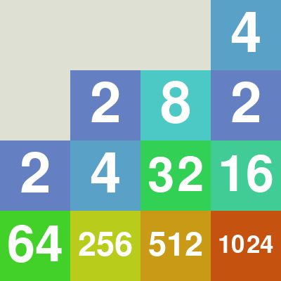
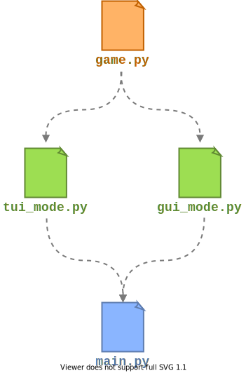

Módulos
O que é um módulo?
O que é um módulo?
De forma geral, um módulo é um arquivo:
- que possui código Python
- e que pode ser utilizado (importado) em outros programas ou módulos
Principais motivações para criarmos módulos:
Principais motivações para criarmos módulos:
Deixar o código mais organizado
Cada módulo mantendo funcionalidades relacionadas a um tópico
específico
Principais motivações para criarmos módulos:
Reuso de código
Um módulo pode ser importado por uma variedade de diferentes
programas (ou outros módulos) que dependem de uma funcionalidade
comum provida pelo módulo
Diversos módulos já são providos por padrão em uma instalação comum de Python:
collections
csv
datatime
json
math
os
pathlib
random
re
Lista completa em https://docs.python.org/3/py-modindex.html
Diversos módulos já são providos por padrão em uma instalação comum de Python:
Esses módulos pertencem ao que chamamos de biblioteca padrão da linguagem Python
Documentação disponível em https://docs.python.org/3/library/index.html
Exemplo: utilizando o módulo math
Exemplo: utilizando o módulo math
Utilizamos import para importar o módulo em nosso
código:
Exemplo: utilizando o módulo math
Os objetos definidos pelo módulo podem ser acessados através do
operador de acesso de atributo (.):
Exemplo: utilizando o módulo math
É possível redefenir o nome da variável que terá a referência ao
módulo utilizando a palavra-chave as:
Exemplo: utilizando o módulo math
É possível importar objetos do módulo diretamente:
Exemplo: utilizando o módulo math
... e também é possível renomear os objetos na importação:
Nós podemos criar nossos próprios módulos!
Nós podemos criar nossos próprios módulos!
poligonos.py
main.py
Como Python encontra o módulo poligonos?
Como Python encontra o módulo poligonos?
A resolução é feita nesta ordem:
- Primeiro procura por um módulo built-in com o nome "polígono" (não é nosso caso);
-
Depois ele procura por um arquivo nomeado "poligono.py" na lista
de diretórios definida em
sys.path.
Como Python encontra o módulo poligonos?
...e Python inicializa a variável sys.path com o
seguinte:
-
Diretório contendo o arquivo de entrada ("main.py" no nosso exemplo);
Por isso que o arquivopoligonos.pyé encontrado! -
Caminhos presentes na variável de ambiente
PYTHONPATH; - Caminhos específicos da instalação utilizada.
Mão na massa!
Mão na massa!
Vamos trabalhar em um pequeno projeto onde iremos criar diferentes módulos!
Vamos trabalhar em um pequeno projeto onde iremos criar diferentes módulos!
O jogo 2048!
Módulos do jogo:
Módulos do jogo:
game.py: Módulo responsável por definir a lógica do
jogo.
Irá prover funções em sua interface pública:
-
create_board(num_rows, num_columns): função para criar um objeto representando o tabuleiro. -
react(board, action): função que deve retornar um novo tabuleiro conforme a ação do usuário (esquerda, direita, para cima, para baixo).
tui_mode.py: Módulo responsável por desenhar o
tabuleiro e capturar ações do usuário no modo
texto.
gui_mode.py: Módulo responsável por desenhar o
tabuleiro e capturar ações do usuário no modo
gráfico.
Cada um irá prover a seguinte função:
-
run(): função que irá iniciar o loop do jogo, onde repetidamente o tabuleiro é desenhado e as ações do usuário são capturadas. Esta função irá chamar funções degame.pyquando necessário.
main.py: Módulo principal do programa. É este
arquivo que vamos utilizar para iniciar o jogo, invocando
python main.py.
Este módulo irá perguntar ao usuário qual modo prefere (texto
ou gráfico) e irá chamar a função run() do módulo
correspondente.
Bora trabalhar!

Legal! Já possuímos uma versão funcional do jogo! 😀
Mas o jogo atualmente não permite que o usuário pause o jogo e continue de onde parou em uma nova chamada.